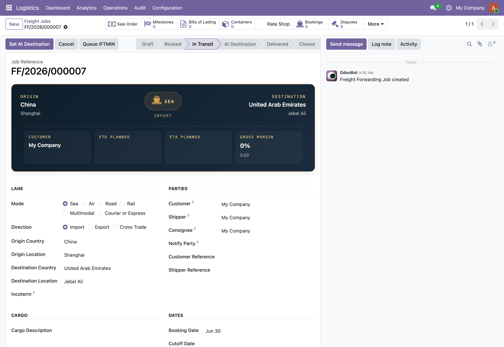

See it in action

The forwarding board at a glanceJobs grouped by lifecycle state, each card carrying its reference, mode, direction, lane, weight and volume so a desk can read its whole book in one screen.

A forwarding job file that holds togetherOrigin to destination at the top with mode and planned margin, a gated status ribbon, and smart buttons through to the sale order, milestones, bills of lading, containers, rate shop, bookings and disputes.